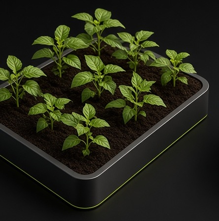

HORTA
A prancha aprovada já mostra as plantas adultas. A terra vazia fica escondida debaixo das folhas, e preencher esse espaço mancha o solo. Por isso esta cena não anima. O que falta é o mesmo vaso, na mesma câmera, só com a terra. Um segundo quadro com brotos baixos, na mesma câmera, segura o meio do crescimento. A lógica continua dias cumpridos dividido pela duração, com a horta cheia só no fim.
